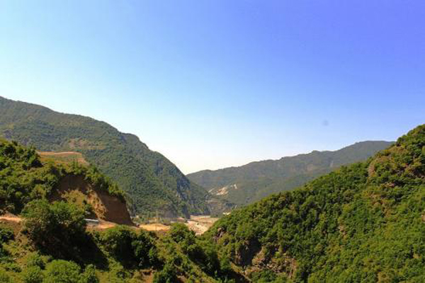
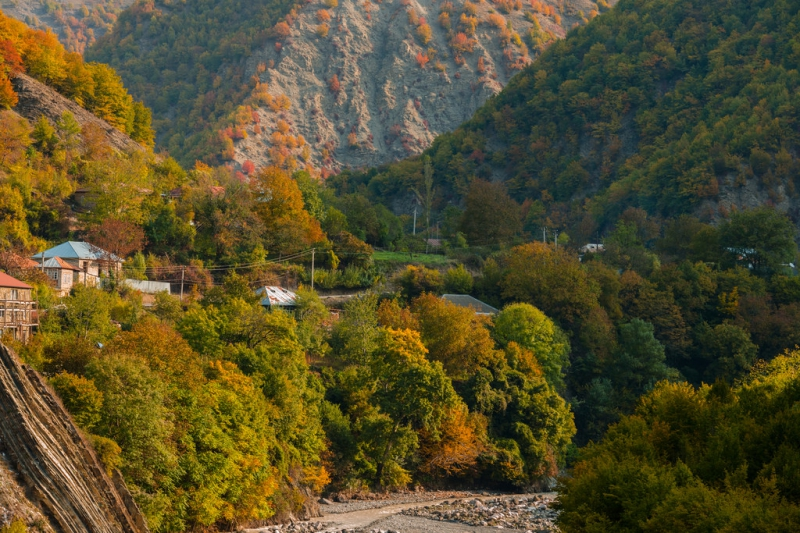

Dağların qoynunda təbii dadlar
İsmayıllı rayonunun Sumağallı kəndində yerləşən Ballı Bağ restoranı sizə təbii, kənd məhsulları ilə hazırlanmış yeməklər təqdim edir. Arı balı, təmiz hava və dağ mənzərəsi ilə unudulmaz istirahət!
📞 051 300 34 32

